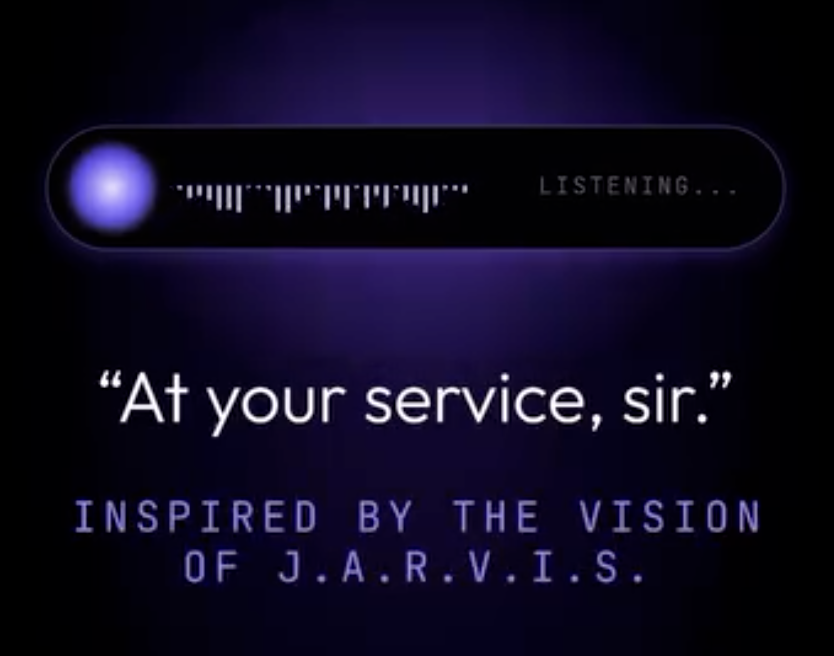

LEO: A Smart Home Assistant
(Built within Tsukuba Tech)
In ProgressAI assistant that works with your apps and files, and learns the tasks you repeat, so your computer works smarter
- Problem
- Existing AI Agents were limitted in their capabilities and user-friendly design.
- What I built
- Expanded the capabilities of LEO to be more user-friendly and accessible on MacOS.
- Result / Status
- Beta prototype developed and currently testing with a group of users.